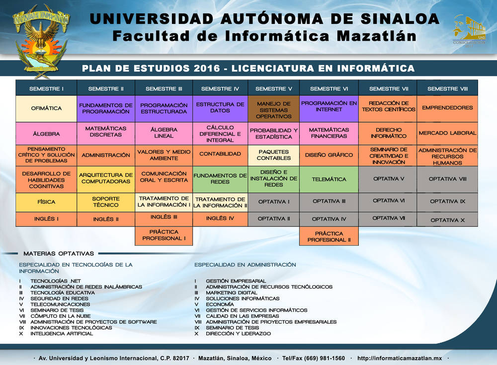

OFERTA EDUCATIVA
Licenciatura en Informática

Licenciatura en Ingeniería en Sistemas de Información

El objetivo del Programa Educativo Licenciatura en Informática es formar profesionales emprendedores, eficientes y con valores éticos, capacitados en la creación y mantenimiento de sistemas de información para la administración.
En cuanto al perfil de ingreso, se buscará que el candidato a ingresar cuente con las siguientes características:
Conceptual
Nociones en técnicas administrativas y de sistemas, en las matemáticas y la física.
Procedimental
Trabajo con equipos de cómputo, capacidad de razonamiento lógico-matemático, pensamiento gráfico y habilidades de comunicación.
Actitudinal
Gusto por la resolución de problemas, iniciativa para el auto-aprendizaje y actitud de servicio.
Diplomado
Módulos:
- Modulo I. Telefonía IP
- Modulo II. Seguridad en redes LINUX
- Modulo III. Desarrollo de Aplicaciones para Dispositivos Móviles con Android.
- Modulo IV. Administración de Terminal de Punto de Venta.
Horario:
- Viernes: 8:00 a 13:00 horas y de 15:00 a 20:00 horas.
- Sábado: 8:00 a 13:00 horas y de 15:00 a 20:00 horas.
- Domingo: 8:00 a 13:00 horas y de 15:00 a 20:00 horas.
Total de horas:
- 180 horas, 120 serán presenciales y 60 de trabajo independiente.
Información Adicional:
- Costo: $ 3,500.00
- Cupo limitado 20 alumnos por grupo.
- Apartar tu lugar con $1,500.00 con Héctor López ( hector.lopez003@gmail.com)
- Se ofrecerá Coffe break matutino y comida en el receso.